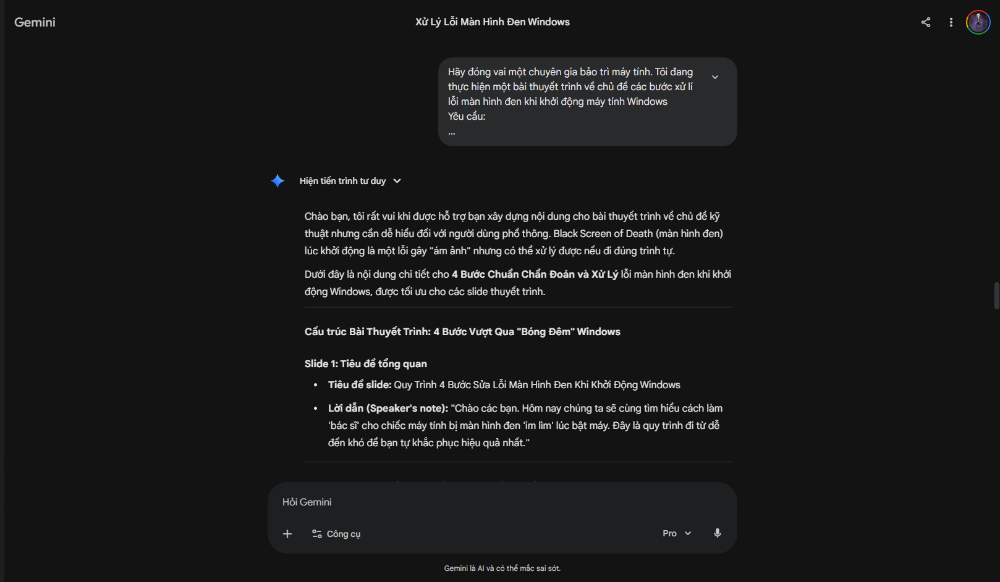
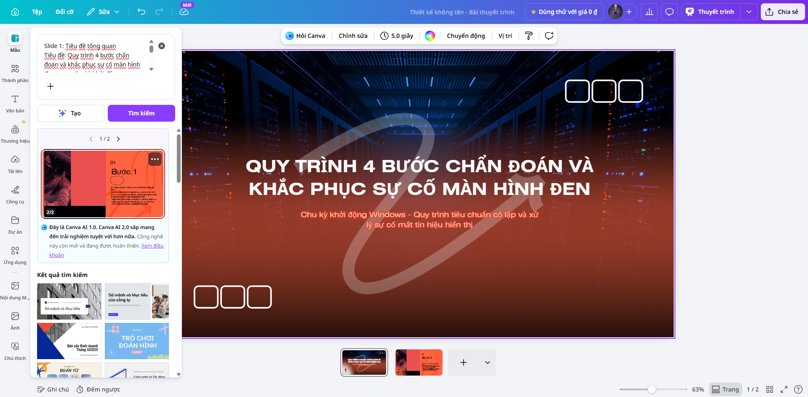

Task 05 / Portfolio học tập
Sử dụng AI tạo sinh để hỗ trợ sáng tạo nội dung
Xây dựng bài thuyết trình trực quan về quy trình chẩn đoán và xử lý lỗi màn hình đen trên máy tính Windows.
Mục tiêu và công cụ
Chủ đề lỗi màn hình đen được chọn vì cần chẩn đoán nhiều tầng, từ phần cứng, BIOS đến hệ điều hành. Định dạng slide giúp cô đọng thao tác bằng bullet point, kết hợp hình 3D và đưa phần giải thích sâu vào Speaker Notes.
| Công cụ | Vai trò |
|---|---|
| Gemini | Cấu trúc dàn ý, giải thích POST, BCD và Kernel. |
| Bing Image Creator (DALL-E 3) | Tạo minh họa isometric 3D. |
| Canva AI | Hỗ trợ bố cục và dàn trang slide. |
Nhật ký thực hiện
Xây dựng nội dung
Gemini được yêu cầu đóng vai chuyên gia bảo trì máy tính, viết các bước xử lý như Restart Explorer.exe và cập nhật driver đồ họa bằng văn phong kỹ thuật nhưng dễ hiểu.
Tạo hình minh họa
Các prompt mô tả laptop lỗi hiển thị, bo mạch chủ xả điện, dữ liệu ổ cứng tự sửa, lá chắn Core OS và chip EEPROM. Phong cách chung là isometric 3D, tông xanh trắng và nền tối giản.
Dàn trang
Canva AI tạo bố cục khởi đầu; nội dung sau đó được rút gọn, phân nhóm và sắp xếp lại thủ công.
Dấu ấn cá nhân
Kết quả thô của AI không được dùng trực tiếp. Nội dung chung chung được thay bằng quy trình cụ thể hơn, gồm xử lý Boot Configuration Data trong WinRE, Power Drain và kiểm tra phản hồi đèn Caps Lock/Num Lock để phân biệt lỗi hệ thống với lỗi hiển thị.
Phần chữ được rút còn các thao tác cốt lõi; giải thích sâu về Kernel, Safe Mode và EEPROM được chuyển xuống ghi chú diễn giả.
Đánh giá công cụ
- Gemini tạo dàn ý nhanh nhưng thiên về lý thuyết và thiếu kinh nghiệm thực chiến.
- Bing Image Creator trực quan hóa phần cứng tốt nhưng đôi khi bỏ qua chi tiết prompt hoặc tạo hình sai cơ chế.
- Canva AI hỗ trợ dựng bố cục ban đầu nhưng chưa tự tổ chức tốt lượng thông tin kỹ thuật dày.
Kết luận: AI tạo baseline nhanh; con người vẫn phải kiểm định logic, chuyên môn và chịu trách nhiệm cuối cùng.
Minh chứng quá trình


Bản PDF: Báo cáo đầy đủ của Task 5.
Mở PDF báo cáo